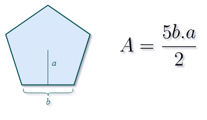

Pentágono
A forma geométrica 2D conhecida como pentágono regular é um polígono de cinco lados onde todos os lados e todos os ângulos têm medidas iguais.
Pentágono = 5 lados
Calcular área
Para calcular a área de um pentágono, é necessário conhecer o apótema, que é a distância do centro do pentágono até o meio de qualquer um dos lados, e o valor de um dos lados:
Neste caso b representa o lado do pentágono e a o apótema.
Multiplicando-se o valor do apótema e do comprimento de um dos lados do pentágono e dividindo por 2, obtem-se a área de um dos 5 triângulos equiláteros que formam o pentágono.
Como o pentágono é formado por 5 triângulos, basta multiplicar a área deles por esse valor.
Por exemplo, se o comprimento de um dos lados é igual a 5 metros e o apótema é igual a 6 metros, a área do pentágono é:
Área do pentágono = 5 x (5 x 6) / 2
Área do pentágono = 150 / 2
Área do pentágono = 75 metros
Resultado:
Voltar